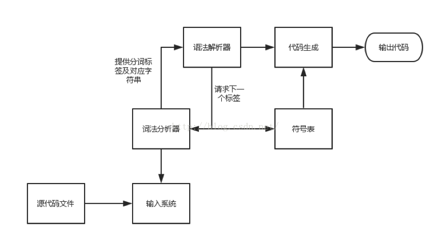
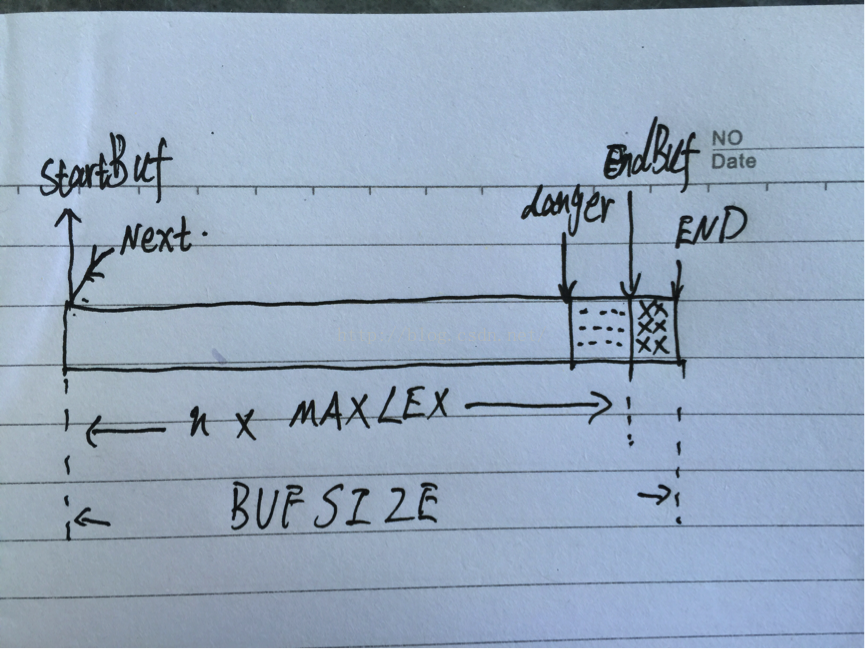
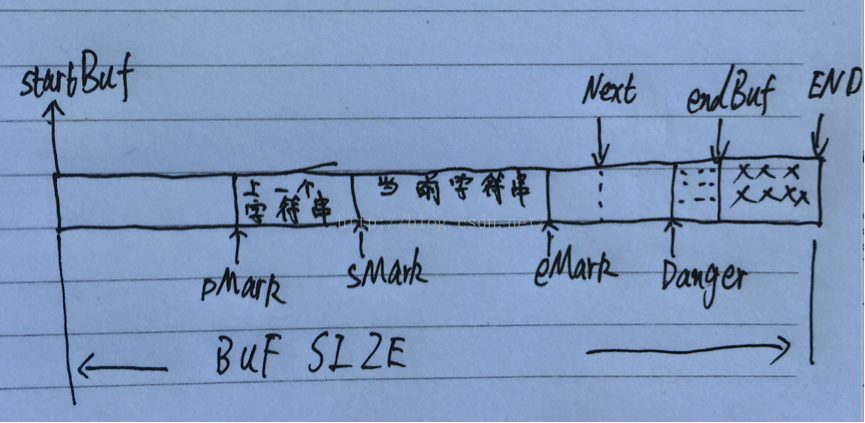
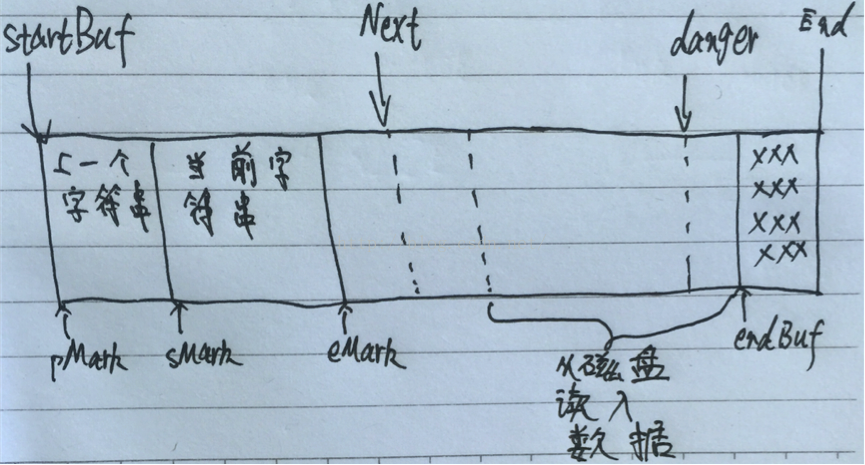

欢迎大家来到coding迪斯尼，我的愿景是：让天下没有难学的知识
这句话是跟马云学的，就算没马云的命，那就用马云的话，也是不错的。
阅读博客的朋友可以到我的网易云课堂中，通过视频的方式查看代码的调试和执行过程：
http://study.163.com/course/courseMain.htm?courseId=1002830012
大家好，继上几节我们通过实现一个简易编译器，通过实践获得一定的感性认识后，这里，我们开始对编译器的各个技术点深入分析，逐个击破。从这节开始，以及后续的相应课程，我们注重输入系统的设计和词法解析所用到的各种算法和理论基础。
本节的重点，是对词法解析系统和输入系统做一个大概的介绍
词法解析是一种相当实用的技术，除了在编译器中，在很多应用场合同样是非常实用的。如果把词法解析看成是一种模式识别引擎，那它可以应用到例如文本编辑器，数据模式识别等方面。稍加扩展，还可以应用到网络协议解析等方面去。
2.1 词法解析器在编译器中的作用
词法解析器在编译器中的作用，是将输入流解析为一种能够被语法解析器使用和管理的格式。他将输入文本分割，打标签，也就是用一些数值来指代一系列相应的字符串，例如关键字while 可以和一个标签关联起来，一般情况下，一个标签可以和很多字符串关联，例如以前看到的NUM_OR_ID,它指代的是代码中的变量定义和数字常量，显然，他们是无穷的, 词法解析器还可以将源码中的注释剔除，忽略空格，换行符等，将这些琐事的工作从语法解析中剥离出来，简化语法解析器的设计。
词法解析是编译过程的一个独立阶段，它通过一组简单的接口与语法解析器相互交互，下面这幅图可以将编译器的骨架给展示出来（描述一下结构图）：

从这个结构，我们可以得到几点启示：词法分析器由于与其他各个部分通过接口进行通信，那么词法解析器内部的修改不会影响到其他部分。例如，如果要编译的程序语言从 c++ 换成c#, 那么只要把词法解析的内部实现换掉，其他部分不变，c++编译器就会转换成c#编译器。另一个好处是，一个独立的词法解析器可以优化它的字符读取速度，例如一次读取足够多的内容，而这种局部优化可以带来整体效果的改进，而优化的过程可以局限在词法解析内部。这其实是典型的将面向对象的设计方法运用到架构设计上。
有时候，词法解析和语法解析之间需要更复杂的交互流程，例如C语言中的typedef ，该语句可以构造一个新的关键字，当语法解析器处理下面这条语句：
typedef int Integer;
词法解析器必须将字符串“Integer” 当做一个类型标签而不能是变量标签(NUM_OR_ID). 这种交互流程就需要一种复杂的数据结构，就是图中的符号表。 语法解析器可以将 Integer插入符号表，词法解析器遇到字符串Integer 时，到符号表中检索一下，检索到后就给Integer打上标签TYPE, 而不是NUM_OR_ID.
2.2 词法解析中的错误恢复
在词法解析过程中，发现错误是很正常的，例如在C语言中，@num 这样的变量定义是非法的，词法解析器遇到这种错误的时候，有若干种处理方法，最简单的是，词法解析器在解析过程中，忽略符号@, 同时输出错误提示。还有更复杂的处理方法，如果读取到一个关键字是 swatch ，那么词法解析器根据匹配算法，将swatch识别为switch等。
2.3 输入系统
在上图中，词法解析器的下方有一个模块叫输入系统。它的作用是将源文件从磁盘或内存中读入，根据模块化设计原理，如果输入系统是一个独立模块，通过固定接口与词法解析器交互的话，那么它的修改和维护将会非常灵活。
输入系统的效率，决定着整个编译系统的效率。我们用C语言的时候，经常会用到他提供的输入函数例如scanf 等。C语言的输入系统设计得不是很合理，当C语言的库函数将数据读入程序的过程中，有三次拷贝, 一是从磁盘上将数据拷贝到操作系统中，二是将数据从操作系统拷贝到一个 FILE 结构中，三是将数据从FILE 结构拷贝到程序的内存中。这些拷贝都需要耗费时间和空间。另外，词法解析器在解析时需要预先读入一些字符(look ahead，在前面的简易编译器中使用过这种技巧), 以便对输入的字符串打上合适的标签(想象前面的typeof 语句，一旦读到typeof 那就需要将typeof后面的字符读进来才好解析), 预先读入的字符，使用完后，可能需要重新放回到缓冲区中，这一取一放，如果不加以良好的设计，那很可能会产生I/O性能上的影响
2.3 一个输入系统的实现
鉴于以上特点，现有的输入系统无法满足编译系统输入的各种要求，因此，我们需要自己开发一个专用的输入系统。我们的输入系统应当具备以下特点：
1. 输入过程要尽可能的快，尽力减少不必要的拷贝。
2. 支持多个字符的预读取和回放。
3. 当解析当前分割的字符串时，上一个解析过的字符串需要容易的获取。
4. 磁盘读写要足够便捷。
下图是我们要实现的输入系统的内存模型：

startBuf 指向缓冲区的起点
END 指向缓冲区的物理结束位置
endBuf 指向缓冲区的逻辑结束位置，也就是数据最多存储到endBuf 处
例如我们申请的内容是300k, 那么END就在300k处，而实际我们用到的是256k，那么endBuf就在256k处。
MAXLEX 是分割后字符串的最多长度，一般设为128，大家在写代码时没有写过长度达128个字符的变量名吧。我们一次从磁盘读入缓冲区的数据量是MAXLEX 的倍数，也就是说，endBuf – startBuf 一定是MAXLEX的整数倍。
Next指向下一个要读取的字符，词法解析器是一个字符一个字符从缓冲区读取数据的。
danger 后面解释
下图显示的是词法解析器解析若干个字符串后，缓冲区的情况：

pMark指向上一个被解析的字符串的起始位置
sMark 指向当前被解析的字符串的起始位置
eMark 指向当前解析的字符串的结束位置
sMark – pMark 是上一个字符串的长度
eMark – sMark 是当前解析字符串的长度
词法解析器在解析时需要读取字符串后的若干字符，所有Next 往后挪动了一段距离。这也就是前面提到的look ahead.
我们前面提到过，预先读取和读取后放回缓冲区需要加以处理，在我们给的的内存模型中，当需要把预先读到的字符退回缓存区时，只要把Next 设置成eMark就可以了。
look ahead 也就是预读取的字符个数是有限制的，限制的个数用常量MAXLOOK表示，也就是
Next – eMark <= MAXLOOK
当Next 的值接近danger 时, 表明缓冲区内的有效数据快被读取完了，当Next指针越过danger 时，就会触发一次flush操作
flush 操作的效果是，将pMark 到endBuf间的数据整体平移到startBuf处，
平移的距离是：
pMark – startBuf
从磁盘中读入数据，把平移后空出来的可用空间给填满，如下图所示（字有点难看）：

从磁盘读入数据：这一段空间的长度就是pMark – startBuf
下一节我们将以代码的形式讲解输入系统的实现